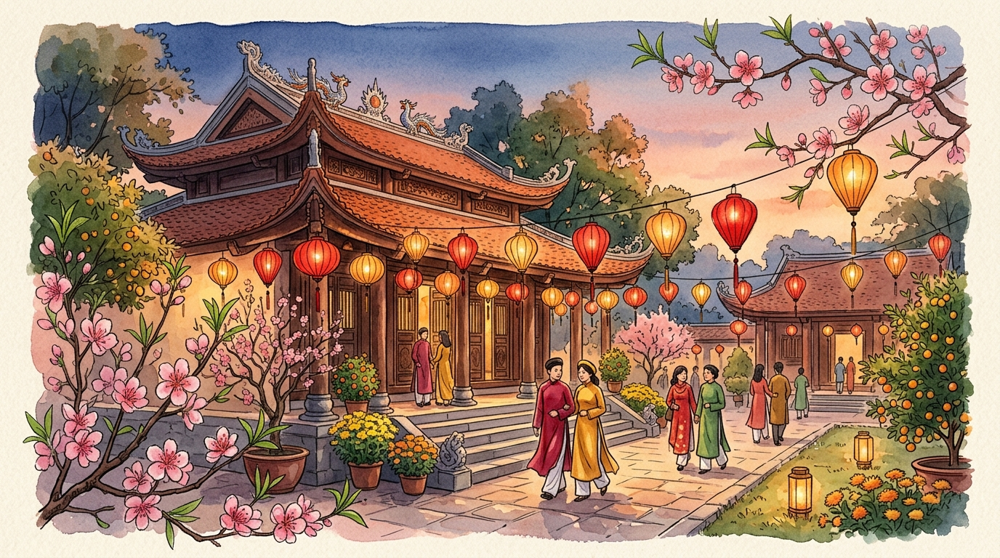

Chủ đề 01 · Cộng đồng & Tín ngưỡng
Lễ hội truyền thống
Lễ hội Việt Nam gắn liền với lịch sử dựng nước, tín ngưỡng nông nghiệp và tinh thần hướng về cội nguồn ở khắp Bắc – Trung – Nam.
- Tết Nguyên Đán: Lễ hội lớn nhất trong năm, là dịp sum họp gia đình, dọn dẹp nhà cửa, gói bánh chưng – bánh tét và chúc Tết đầu xuân.
- Lễ hội Đền Hùng (Phú Thọ): Diễn ra vào mùng 10 tháng 3 âm lịch hằng năm để tưởng nhớ các Vua Hùng đã có công dựng nước.
- Lễ hội Chùa Hương & Lễ hội Ok Om Bok: Phản ánh sự đa dạng tín ngưỡng từ lễ hội hành hương miền Bắc đến lễ cúng trăng đặc sắc của đồng bào Khmer Nam Bộ.
Lưu ý khi tham gia: Nên ăn mặc lịch sự khi vào đền chùa, giữ gìn vệ sinh chung và tôn trọng nghi thức địa phương.